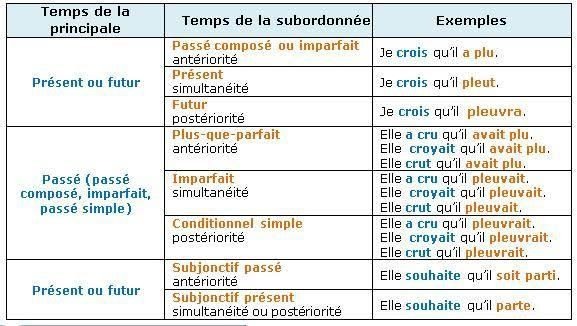
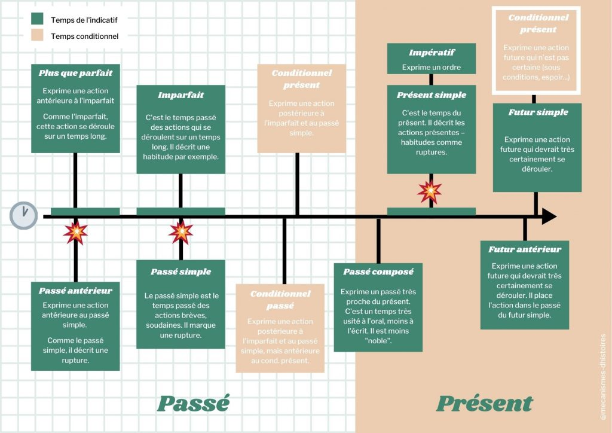
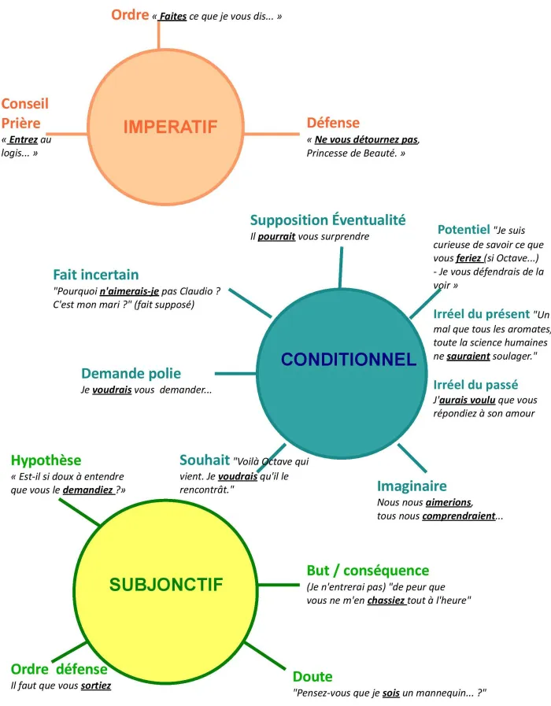
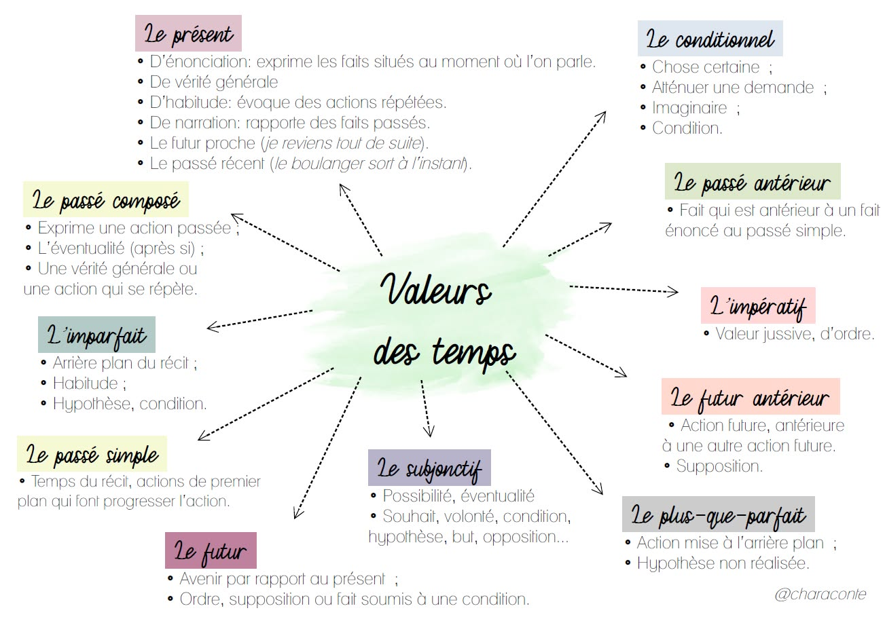

Les deux systèmes temporels
À comprendre
En français, on distingue deux grands systèmes pour organiser les temps selon le type de texte :
LE DISCOURS
Textes : lettre, dialogue, journal intime, discours, texte argumentatif...
Point de référence : le présent de l'énonciation (moment où l'on parle/écrit).
Alors que tu grandissais, nous avons attendu ce jour. Tandis que nous t'observons, tu empoignes l'épée sacrée. Quand tu auras fini ta formation, tu nous mèneras vers le Graal.
LE RÉCIT
Textes : roman, nouvelle, conte, fait divers, récit historique...
Point de référence : un moment passé choisi par le narrateur.
Ils avaient attendu ce jour pendant longtemps. Tandis que l'observaient les chevaliers, Arthur empoigna l'épée sacrée. Bientôt il les mènerait vers le Graal.
Comparaison : un même texte au discours et au récit
| Temps du discours | Temps du récit correspondant |
|---|---|
| Présent (je mange) | Imparfait (je mangeais) |
| Passé composé (j'ai mangé) | Passé simple (je mangeai) ou plus-que-parfait |
| Futur simple (je mangerai) | Conditionnel présent (je mangerais) |
| Futur antérieur (j'aurai mangé) | Conditionnel passé (j'aurais mangé) |
Valeurs des temps de l'indicatif
Valeurs des modes
Rappel : la valeur temporelle du conditionnel
Le conditionnel a deux visages :
🔸 Comme mode : il exprime l'hypothèse, le souhait, l'atténuation, l'imaginaire (valeurs modales).
🔸 Comme temps : dans un récit au passé, il peut remplacer le futur (c'est le "futur dans le passé").
Ex: Il disait qu'il viendrait. (futur dans le passé = valeur temporelle)
Rappel : modes personnels vs impersonnels
Les modes personnels (indicatif, subjonctif, impératif, conditionnel) se conjuguent avec des personnes.
Les modes impersonnels (infinitif, participe, gérondif) ne se conjuguent pas et ont d'autres emplois.
La concordance des temps
Définition
La concordance des temps est la relation entre le temps de la proposition principale et celui de la subordonnée. Elle permet de situer les actions les unes par rapport aux autres (antériorité, simultanéité, postériorité).
Concordance dans le DISCOURS
Quand la principale est au présent ou au futur :
| Relation temporelle | Temps de la subordonnée | Exemple |
|---|---|---|
| Simultanéité (en même temps) | Présent | Je crois qu'il pleut. |
| Antériorité (avant) | Passé composé | Je crois qu'il a plu. |
| Postériorité (après) | Futur simple | Je crois qu'il pleuvra. |
| Souhait, doute | Subjonctif présent | Je souhaite qu'il vienne. |
| Souhait antérieur | Subjonctif passé | Je souhaite qu'il soit parti. |
Concordance dans le RÉCIT
Quand la principale est à un temps du passé :
| Relation temporelle | Temps de la subordonnée | Exemple |
|---|---|---|
| Simultanéité (en même temps) | Imparfait | Il croyait qu'il pleuvait. |
| Antériorité (avant) | Plus-que-parfait | Il croyait qu'il avait plu. |
| Postériorité (après) | Conditionnel présent | Il croyait qu'il pleuvrait. |
| Souhait, doute | Imparfait du subjonctif | Il souhaitait qu'il vînt. |
| Souhait antérieur | Plus-que-parfait du subj. | Il souhaitait qu'il fût venu. |
Récapitulatif : passage du discours au récit
Pour transformer un texte du discours au récit, on "décale" les temps :
- Présent → Imparfait : "Il dit qu'il mange" → "Il disait qu'il mangeait"
- Passé composé → Plus-que-parfait : "Il dit qu'il a mangé" → "Il disait qu'il avait mangé"
- Futur simple → Conditionnel présent : "Il dit qu'il mangera" → "Il disait qu'il mangerait"
- Futur antérieur → Conditionnel passé : "Il dit qu'il aura mangé" → "Il disait qu'il aurait mangé"
À savoir pour le brevet
On vous demande souvent de réécrire un texte en changeant le temps de la principale. Il faut alors appliquer ces règles de concordance !
Cartes mentales
Temps du discours

Temps du récit

Modes et temps

Concordance des temps

Tableau concordance

Concordance et valeurs

Valeurs des modes

Valeurs des temps
